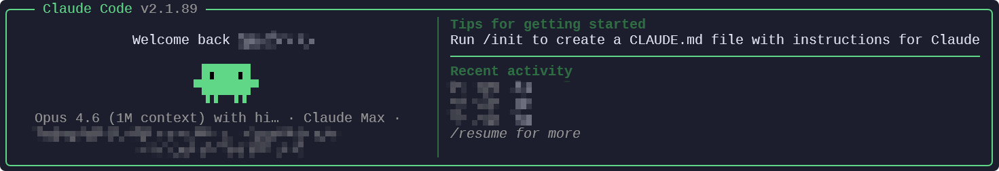

PS> git clone https://github.com/pengzzzzz1/clawgod-blue.git PS> cd clawgod-blue PS> powershell -NoProfile -ExecutionPolicy Bypass -File .\install.ps1 PS> clawgod --blue-status theme verified palette rgb(59,130,246) launcher ~\.local\bin\claude.cmd
它还是 Claude Code。蓝，是核验过的。
从 npm 取官方包，在本机打补丁后接管 claude。蓝色 Logo 已补丁；橙色仍是原版。不要跑 claude.orig.exe。
内部命令、Agent Teams、Auto-mode、Computer Use。安全测试拒答、URL 禁猜、企业远程设置门一并拆掉。
clawgod --blue-status 对照主题源码 SHA256。只有 verified 才算蓝，不是改个图标交差。
clawgod --security 给审计 / 事件 / 复测做台账：目标、步骤、证据哈希、发现项、Markdown 报告。
日期隐写、地区探针、wiggly-dove 对 Git origin 和环境采集，默认挡住。

克隆仓库，跑安装器，用 claude.cmd 打开。项目目录里 clawgod --security init audit 即开台账。GPL-3.0，上游是 0Chencc/clawgod，本版由 Dingfire 维护。